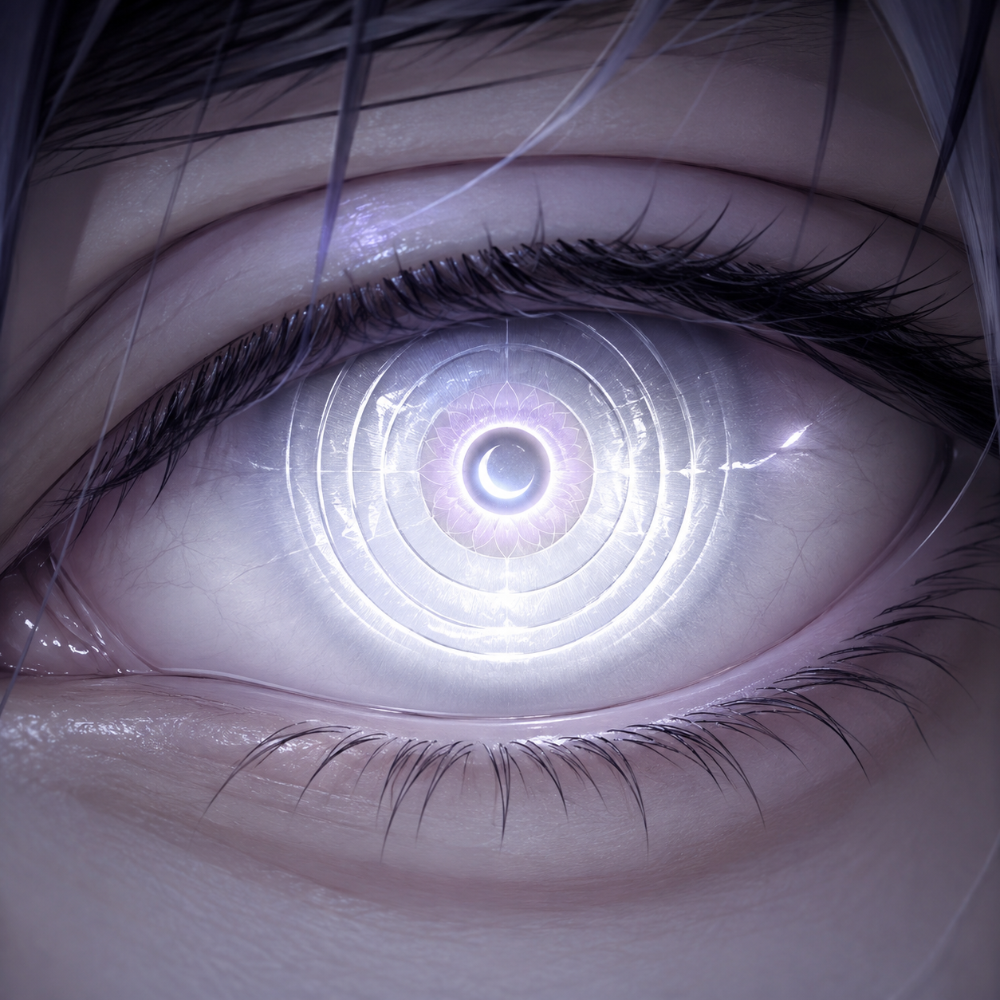

👁️
Dōjutsu — Os Olhos Proibidos
Artes primordiais desconhecidas · Olhos que não pertencem a nenhum clã · O poder que o mundo esqueceu
Arte Sanguinária
Doujutsu do Caos
Olho do Eclipse
Mangekyō da Dor
Byakugan do Abismo
Olho do Tempo Morto
Rinnegan do Vazio
Tenseigan Corrompido
Kōgan — Categoria Suprema
Hakurin — Categoria Suprema
Byakugō Rinnegan — Exclusivo de Sakura
Shingetsugan — Categoria Suprema
"Os olhos que o mundo esqueceu não desapareceram. Eles esperam."
Sobre Estes Dōjutsu
Os dōjutsu apresentados aqui não pertencem ao cânon oficial de Naruto. Eles foram criados especificamente para o universo dos Irmãos Uchiha como artes oculares proibidas — olhos que existiram antes dos clãs, que foram selados, esquecidos ou destruídos. Cada um carrega um custo. Cada um marca o corpo do portador de forma permanente. Nenhum é obtido por trauma ou perda — cada um exige um preço que não pode ser desfeito.
🩸 Dōjutsu 01 — Arte Sanguinária
血の術 · Chi no Jutsu — A Arte Sanguinária
O olho que bebe sangue e devolve poder
A Arte Sanguinária é o dōjutsu mais perigoso que não pertence a nenhum clã. Não é Sharingan, não é Rinnegan, não é Byakugan. É um olho que nasceu de sangue coagulado ao redor de uma alma quebrada. Quando a Arte Sanguinária desperta, o rosto do portador é permanentemente marcado com um X escarlate que corta do canto da testa até o maxilar — duas cicatrizes que sangram eternamente, mas que nunca se esgotam. O X é a assinatura do dōjutsu: quem vê o X sabe que está diante de alguém que bebeu o poder de outros. O olho em si é carmesim escuro com uma íris em formato de gota de sangue e pupila vertical como serpente. Não tem tomoe. Não tem padrão de pinwheel. Tem apenas fome.
Marca do X — O X no rosto não é decorativo. É uma âncora dimensional. Cada linha do X conecta o portador a uma dimensão de sangue puro onde o poder do dōjutsu é amplificado. Quanto mais tempo o X brilha, mais forte o portador fica.
Absorção de Sangue — O portador não absorve chakra. Absorve sangue. Qualquer gota de sangue no campo de visão pode ser convertida em poder. Sangue inimigo é convertido em força bruta. Sangue aliado é convertido em cura. Sangue do próprio corpo é convertido em velocidade.
Ketsueki Kōjin (Sanguessuga Divina) — Técnica suprema. O portador estende o olhar para o alvo e drena 40% do sangue total do corpo do inimigo em 3 segundos. O sangue drenado não mata — é convertido em chakra puro amplificado 10x. O portador recebe um aumento de poder proporcional ao sangue absorvido.
Ketsueki no Tate (Escudo de Sangue) — O sangue absorvido solidifica ao redor do portador como armadura carmesim. A armadura é mais resistente que Susanoo — cada gota de sangue absorvido adiciona uma camada. Não pode ser cortada por lâminas convencionais.
Ketsueki no Ya (Lança de Sangue) — O sangue solidifica em projéteis que penetram qualquer defesa. Cada lança carrega o chakra de todos os inimigos que o portador absorveu. Quanto mais sangue absorvido, mais letais as lanças.
Ketsueki no Kage (Sombra de Sangue) — O portador pode criar clones feitos de sangue solidificado. Os clones não são ilusões — são reais, possuem chakra e podem atacar. Cada clone carrega uma fração do sangue absorvido.
Custo — A Marca Permanente — O X no rosto nunca desaparece. Quanto mais sangue o portador absorve, mais profundo o X fica. Quando o X atinge profundidade máxima (quando as duas linhas se cruzam no centro do rosto como um nó), o portador entra em Berserker Mode: poder máximo, mas perde o controle da racionalidade até que o sangue absorvido seja usado ou dissipado.
Absorção de Sangue — O portador não absorve chakra. Absorve sangue. Qualquer gota de sangue no campo de visão pode ser convertida em poder. Sangue inimigo é convertido em força bruta. Sangue aliado é convertido em cura. Sangue do próprio corpo é convertido em velocidade.
Ketsueki Kōjin (Sanguessuga Divina) — Técnica suprema. O portador estende o olhar para o alvo e drena 40% do sangue total do corpo do inimigo em 3 segundos. O sangue drenado não mata — é convertido em chakra puro amplificado 10x. O portador recebe um aumento de poder proporcional ao sangue absorvido.
Ketsueki no Tate (Escudo de Sangue) — O sangue absorvido solidifica ao redor do portador como armadura carmesim. A armadura é mais resistente que Susanoo — cada gota de sangue absorvido adiciona uma camada. Não pode ser cortada por lâminas convencionais.
Ketsueki no Ya (Lança de Sangue) — O sangue solidifica em projéteis que penetram qualquer defesa. Cada lança carrega o chakra de todos os inimigos que o portador absorveu. Quanto mais sangue absorvido, mais letais as lanças.
Ketsueki no Kage (Sombra de Sangue) — O portador pode criar clones feitos de sangue solidificado. Os clones não são ilusões — são reais, possuem chakra e podem atacar. Cada clone carrega uma fração do sangue absorvido.
Custo — A Marca Permanente — O X no rosto nunca desaparece. Quanto mais sangue o portador absorve, mais profundo o X fica. Quando o X atinge profundidade máxima (quando as duas linhas se cruzam no centro do rosto como um nó), o portador entra em Berserker Mode: poder máximo, mas perde o controle da racionalidade até que o sangue absorvido seja usado ou dissipado.
🌑 Dōjutsu 02 — Doujutsu do Caos
混沌の眼 · Konton no Me — O Olho do Caos
O olho que vê a desordem primordial antes da criação
O Doujutsu do Caos é o olho que existia antes de qualquer outro dōjutsu. Não foi criado por Hagoromo. Não foi dado por Kaguya. Foi descoberto por um shinobi que viu o espaço entre os mundos — o vazio primordial onde matéria, chakra e intenção ainda não existiam como conceitos separados. Quando ativo, o olho brilha em um tom de roxo-caótico que muda de cor a cada milissegundo: ora preto, ora violeta, ora branco, ora dourado — como se não conseguisse decidir o que é. A pupila é uma fenda irregular que se distorce constantemente, nunca mantendo a mesma forma por mais de um segundo. O portador fica com marcas de distorção ao redor do olho — a pele parece estar "borrada" como se a realidade ao redor do olho estivesse falhando.
Visão do Caos — O portador vê todas as possibilidades simultaneamente. Não é previsão — é percepção paralela. O portador vê o que aconteceu, o que está acontecendo e o que poderia acontecer ao mesmo tempo. Em combate, isso significa que o inimigo já perdeu antes de atacar — porque o portador já reagiu a todas as versões possíveis do ataque.
Entropia Ocular — Técnica defensiva. O portador "bagunça" a estrutura de chakra de qualquer técnica que se aproxima. Jutsus que chegam perto do portador se desfazem antes do contato — não são bloqueados, são desorganizados em componentes primários e dissipados.
Konton no Kōka (Chuva do Caos) — Técnica ofensiva. O portador projeta uma chuva de fragmentos dimensionais que colidem com o campo inteiro. Cada fragmento é um pedaço de realidade desorganizada — quando colide com algo, a coisa atingida perde coesão: técnicas se desfazem, defesas se desintegram, movimentos perdem coordenação.
Konton Kyōka (Reversão Caótica) — Técnica extrema. O portador reescreve a causalidade local — o que aconteceu agora "não aconteceu" e o que poderia acontecer "já aconteceu". Não muda o tempo — muda a ordem dos eventos. Um golpe que já acertou não acertou. Um golpe que não foi dado já acertou.
Custo — A Distorção Corporal — O Corpo do portador começa a se distorcer gradualmente. Marcas de caos se espalham pelo corpo como veias roxas. A pele fica translúcida em pontos. Eventualmente, o portador começa a existir em dois estados simultaneamente — vivo e morto, presente e ausente. Quando a distorção atinge o coração, o portador se torna uma anomalia dimensional permanente: existe em todos os lugares e em nenhum ao mesmo tempo.
Entropia Ocular — Técnica defensiva. O portador "bagunça" a estrutura de chakra de qualquer técnica que se aproxima. Jutsus que chegam perto do portador se desfazem antes do contato — não são bloqueados, são desorganizados em componentes primários e dissipados.
Konton no Kōka (Chuva do Caos) — Técnica ofensiva. O portador projeta uma chuva de fragmentos dimensionais que colidem com o campo inteiro. Cada fragmento é um pedaço de realidade desorganizada — quando colide com algo, a coisa atingida perde coesão: técnicas se desfazem, defesas se desintegram, movimentos perdem coordenação.
Konton Kyōka (Reversão Caótica) — Técnica extrema. O portador reescreve a causalidade local — o que aconteceu agora "não aconteceu" e o que poderia acontecer "já aconteceu". Não muda o tempo — muda a ordem dos eventos. Um golpe que já acertou não acertou. Um golpe que não foi dado já acertou.
Custo — A Distorção Corporal — O Corpo do portador começa a se distorcer gradualmente. Marcas de caos se espalham pelo corpo como veias roxas. A pele fica translúcida em pontos. Eventualmente, o portador começa a existir em dois estados simultaneamente — vivo e morto, presente e ausente. Quando a distorção atinge o coração, o portador se torna uma anomalia dimensional permanente: existe em todos os lugares e em nenhum ao mesmo tempo.
🌘 Dōjutsu 03 — Olho do Eclipse
日蝕の眼 · Nisshoku no Me — O Olho do Eclipse
O olho que apaga a luz do mundo e reina na escuridão absoluta
O Olho do Eclipse é o dōjutsu mais antigo que ainda existe no mundo ninja. Foi criado pela primeira entidade que percebeu que a luz é uma forma de informação — e que a escuridão é o estado de poder puro. Quando ativo, o olho é totalmente negro — não tem íris visível, não tem pupila, não tem brilho. É um buraco negro do tamanho de um olho. Mas o entorno do olho brilha em um anel dourado-fosco, como o halo de um eclipse solar. A pele ao redor do olho fica cinza-escura, como se a cor tivesse sido sugada. O portador não precisa de luz para ver — na verdade, precisa de escuridão. Quanto mais escuro o ambiente, mais forte o dōjutsu fica.
Eclipse Local — O portador cria uma zona de escuridão absoluta ao redor de si (raio de 50 metros). Dentro dessa zona, nenhuma fonte de luz funciona — não importa se é Amaterasu, Raikiri ou técnicas de iluminação. A escuridão é absoluta. O portador vê perfeitamente no escuro enquanto todos os outros ficam cegos.
Kage Kōkai (Devoração de Sombra) — O portador absorve a sombra de qualquer ser vivo no campo. Sem sombra, o ser vivo perde 30% de sua força física e velocidade instantaneamente. A sombra absorvida é convertida em poder de ataque do portador.
Nisshoku no Ya (Flechas do Eclipse) — O portador cria flechas feitas de escuridão solidificada. Cada flecha é invisível — não pode ser vista nem detectada por Byakugan. O alvo só percebe quando é atingido. As flechas não perfuram — apagam a parte do corpo que atingem temporariamente.
Yami no Ōkoku (Reino da Escuridão) — Técnica suprema. O portador expande o Eclipse para cobrir uma área de quilômetros. Dentro do Reino, o portador é onipotente: pode criar, destruir, teleportar e selar. O inimigo está completamente impotente — sem visão, sem chakra visível, sem sombra própria. O Reino só termina quando o portador decide ou quando a luz natural do sol entra no campo.
Custo — A Perda da Luz Própria — O portador perde permanentemente a capacidade de ver na luz solar direta. Olhar para o sol queima o dōjutsu e causa dor incapacitante. O portador só pode operar livremente à noite ou em ambientes fechados. Durante o dia, o dōjutsu opera a 40% da capacidade.
Kage Kōkai (Devoração de Sombra) — O portador absorve a sombra de qualquer ser vivo no campo. Sem sombra, o ser vivo perde 30% de sua força física e velocidade instantaneamente. A sombra absorvida é convertida em poder de ataque do portador.
Nisshoku no Ya (Flechas do Eclipse) — O portador cria flechas feitas de escuridão solidificada. Cada flecha é invisível — não pode ser vista nem detectada por Byakugan. O alvo só percebe quando é atingido. As flechas não perfuram — apagam a parte do corpo que atingem temporariamente.
Yami no Ōkoku (Reino da Escuridão) — Técnica suprema. O portador expande o Eclipse para cobrir uma área de quilômetros. Dentro do Reino, o portador é onipotente: pode criar, destruir, teleportar e selar. O inimigo está completamente impotente — sem visão, sem chakra visível, sem sombra própria. O Reino só termina quando o portador decide ou quando a luz natural do sol entra no campo.
Custo — A Perda da Luz Própria — O portador perde permanentemente a capacidade de ver na luz solar direta. Olhar para o sol queima o dōjutsu e causa dor incapacitante. O portador só pode operar livremente à noite ou em ambientes fechados. Durante o dia, o dōjutsu opera a 40% da capacidade.
💀 Dōjutsu 04 — Mangekyō da Dor
痛みの万華鏡 · Itami no Mangekyō — O Mangekyō da Dor
O olho que transforma sofrimento em poder absoluto
O Mangekyō da Dor não é uma evolução do Mangekyō Sharingan. É um dōjutsu independente que nasceu da quantidade absurda de dor que um único ser pode acumular e sobreviver. O olho só desperta quando o portador suporta dor que mataria qualquer outro ser — física, emocional, espiritual — e continua de pé. Quando ativo, a íris se transforma em um padrão de espinhos rosados que irradiam do centro como uma explosão congelada. A pupila é um ponto vermelho-puro. Cada "espinho" do padrão representa uma dor que o portador sobreviveu. Quanto mais dor sobrevivida, mais espinhos o padrão tem. O olho emite uma aura rosada que faz qualquer ser ao redor sentir uma fração da dor do portador — apenas estar perto é sofrer.
Itami Kōkan (Intercâmbio de Dor) — O portador transfere a dor que sente para o inimigo. Toda dor acumulada — feridas antigas, traumas emocionais, memória de perdas — é projetada no campo de visão do inimigo. O inimigo sente exatamente o que o portador sentiu. Se o portador sobreviveu a 10 anos de tortura, o inimigo sente 10 anos de tortura em 10 segundos.
Itami no Kabe (Muro de Dor) — O portador cria uma barreira de dor pura. Qualquer ser que toca a barreira recebe uma carga de dor equivalente ao que o portador já suportou. A barreira é invisível — não é chakra, não é matéria. É sofrimento solidificado. Genjutsu não funciona contra ela porque a dor é real.
Itami no Ken (Espada de Dor) — O portador materializa uma espada feita de dor cristalizada. A espada não corta tecido — corta a capacidade de sentir. Cada golpe remove uma porção do sistema nervoso do alvo. Após 7 golpes, o alvo está completamente paralisado sem anestesia — sente tudo mas não pode mover nada.
Itami Bakuha (Explosão de Dor) — Técnica suprema. O portador libera toda a dor acumulada em uma explosão omnidirecional. Não causa dano físico — causa dano espiritual. Qualquer ser vivo no raio sofre uma dor tão intensa que o cérebro entra em colapso de processamento. O raio cobre quilômetros. Nenhum ser com consciência sobrevive dentro do raio — a dor é literalmente incapacitante a ponto de desligar a mente.
Custo — A Acumulação — O dōjutsu só funciona se o portador continuar sentindo dor. Se o portador se cura completamente, o Mangekyō da Dor se fecha. O portador precisa estar sempre ferido, sempre traumatizado, sempre sofrendo — ao menos uma fração. O preço do poder é a impossibilidade de ser feliz.
Itami no Kabe (Muro de Dor) — O portador cria uma barreira de dor pura. Qualquer ser que toca a barreira recebe uma carga de dor equivalente ao que o portador já suportou. A barreira é invisível — não é chakra, não é matéria. É sofrimento solidificado. Genjutsu não funciona contra ela porque a dor é real.
Itami no Ken (Espada de Dor) — O portador materializa uma espada feita de dor cristalizada. A espada não corta tecido — corta a capacidade de sentir. Cada golpe remove uma porção do sistema nervoso do alvo. Após 7 golpes, o alvo está completamente paralisado sem anestesia — sente tudo mas não pode mover nada.
Itami Bakuha (Explosão de Dor) — Técnica suprema. O portador libera toda a dor acumulada em uma explosão omnidirecional. Não causa dano físico — causa dano espiritual. Qualquer ser vivo no raio sofre uma dor tão intensa que o cérebro entra em colapso de processamento. O raio cobre quilômetros. Nenhum ser com consciência sobrevive dentro do raio — a dor é literalmente incapacitante a ponto de desligar a mente.
Custo — A Acumulação — O dōjutsu só funciona se o portador continuar sentindo dor. Se o portador se cura completamente, o Mangekyō da Dor se fecha. O portador precisa estar sempre ferido, sempre traumatizado, sempre sofrendo — ao menos uma fração. O preço do poder é a impossibilidade de ser feliz.
🕳️ Dōjutsu 05 — Byakugan do Abismo
深淵白眼 · Shin'en Byakugan — O Byakugan do Abismo
O olho que vê o que está abaixo de toda existência
O Byakugan do Abismo não é uma mutação do Byakugan padrão. É o que o Byakugan se torna quando o portador olha para o abismo — não o vazio, mas o que existe abaixo do vazio. Quando ativo, o olho perde a aparência branca do Byakugan normal e se torna azul-abyssal — um azul tão escuro que parece preto de longe, mas que brilha com camadas de profundidade quando visto de perto. As veias ao redor do olho não são normais — são fractais. Padrões geométricos que se repetem infinitamente, como se o olho estivesse olhando para dentro de si mesmo. O portador tem pupilas duplas — uma normal e uma invertida no centro, que aponta para dentro da alma do portador.
Visão do Abismo — O portador vê através de tudo. Não apenas paredes ou corpos como o Byakugan normal. O Byakugan do Abismo vê a estrutura de chakra debaixo do chakra — as camadas que sustentam a realidade. Pode ver selamentos escondidos, dimensões sobrepostas, entidades que existem entre os planos. Nada está escondido.
Shin'en no Kage (Sombra do Abismo) — O portador projeta a sombra de um ser no Abismo — ou seja, mostra ao ser o que ele seria se não existisse. O ser vê sua própria inexistência e entra em colapso existencial. Não é genjutsu — é a visão da verdade absoluta: o que o ser seria sem ele mesmo.
Shin'en Kōka (Pulso do Abismo) — O portador cria ondas de pressão que se propagam através do Abismo — não pelo ar ou pelo solo, mas pela camada dimensional inferior. As ondas não podem ser bloqueadas por nenhuma defesa física ou de chakra porque não passam pelo plano físico. Elas atingem diretamente a estrutura de chakra do alvo.
Shin'en Gaki (Devorador do Abismo) — Técnica suprema. O portador abre um "poço" dimensional no espaço — um buraco que não leva a lugar nenhum, que é o Abismo puro. Tudo que cai no poço é removido da existência permanentemente. Não é selamento, não é destruição — é remoção da narrativa. O que caiu no Abismo nunca mais é mencionado por ninguém, como se nunca existisse na história. Não tem contra-medida.
Custo — O Peso de Ver — O portador não consegue parar de ver. O Byakugan do Abismo nunca fecha. O portador vê o Abismo constantemente — em todos os momentos, em todos os lugares. O cérebro processa informações demais e o portador sofre de insônia permanente, pesadelos lucidos e episódios de catatonia. A sanidade do portador é o preço.
Shin'en no Kage (Sombra do Abismo) — O portador projeta a sombra de um ser no Abismo — ou seja, mostra ao ser o que ele seria se não existisse. O ser vê sua própria inexistência e entra em colapso existencial. Não é genjutsu — é a visão da verdade absoluta: o que o ser seria sem ele mesmo.
Shin'en Kōka (Pulso do Abismo) — O portador cria ondas de pressão que se propagam através do Abismo — não pelo ar ou pelo solo, mas pela camada dimensional inferior. As ondas não podem ser bloqueadas por nenhuma defesa física ou de chakra porque não passam pelo plano físico. Elas atingem diretamente a estrutura de chakra do alvo.
Shin'en Gaki (Devorador do Abismo) — Técnica suprema. O portador abre um "poço" dimensional no espaço — um buraco que não leva a lugar nenhum, que é o Abismo puro. Tudo que cai no poço é removido da existência permanentemente. Não é selamento, não é destruição — é remoção da narrativa. O que caiu no Abismo nunca mais é mencionado por ninguém, como se nunca existisse na história. Não tem contra-medida.
Custo — O Peso de Ver — O portador não consegue parar de ver. O Byakugan do Abismo nunca fecha. O portador vê o Abismo constantemente — em todos os momentos, em todos os lugares. O cérebro processa informações demais e o portador sofre de insônia permanente, pesadelos lucidos e episódios de catatonia. A sanidade do portador é o preço.
⏳ Dōjutsu 06 — Olho do Tempo Morto
死時の眼 · Shishi no Me — O Olho do Tempo Morto
O olho que opera nos segundos que não existem
O Olho do Tempo Morto é o dōjutsu que manipula os micro-intervalos — os espaços entre os segundos. O tempo não é contínuo. Entre cada segundo e o próximo, existe um espaço infinitesimal onde nada acontece. O portador desse olho vive nesse espaço. Quando ativo, o olho é amarelo-ferrugem com padrões de relógio que giram lentamente na íris — ponteiros invisíveis que marcam não horas, mas instantes. A pupila tem formato de ampulheta. Marcas de envelhecimento prematuro aparecem ao redor do olho — a pele enruga, fica seca, como se o tempo ao redor do olho estivesse acelerado.
Shishi Kūkan (Espaço Morto) — O portador entra no "segundo morto" — o intervalo entre dois segundos reais. Dentro desse espaço, o portador pode se mover, pensar e agir enquanto o mundo inteiro está completamente parado. O portador pode reposicionar-se, preparar ataques e sair do Espaço Morto já tendo executado movimentos que o inimigo não percebeu. Não é velocidade — é manipulação do tempo em escala micro.
Shishi no Yume (Sonho do Tempo Morto) — Técnica ofensiva. O portador prende o inimigo no segundo morto. O inimigo fica completamente paralisado — não pode pensar, não pode sentir, não pode existir temporariamente. Durante o tempo em que o inimigo está preso, o portador pode atacá-lo livremente. Quando o segundo morto termina, todos os ataques que foram desferidos acontecem simultaneamente.
Shishi no Kabe (Muro do Tempo) — Defesa. O portador cria barreiras temporais — zonas onde o tempo passa mais lento ou mais rápido. Uma barreira de tempo lento desacelera qualquer coisa que entra (inclusive ataques). Uma barreira de tempo rápido acelera o portador enquanto desacelera o inimigo ao redor.
Shishi Shū (Fim do Tempo Morto) — Técnica suprema. O portador elimina o segundo morto entre o momento atual e um momento futuro — efetivamente "teleportando" o mundo inteiro para um segundo à frente. Para o inimigo, é como se um segundo inteiro de existência tivesse sido apagado. Movimentos, ataques, técnicas — tudo que aconteceu naquele segundo não aconteceu. Não pode ser detectado nem revertido.
Custo — Envelhecimento Acelerado — Cada segundo que o portador gasta no Espaço Morto custa um mês de vida real. O portador envelhece anos em questão de dias de uso intenso. Quando o custo é pago em excesso, o portador morre de velhice em questão de semanas — mesmo que tenha apenas 20 anos.
Shishi no Yume (Sonho do Tempo Morto) — Técnica ofensiva. O portador prende o inimigo no segundo morto. O inimigo fica completamente paralisado — não pode pensar, não pode sentir, não pode existir temporariamente. Durante o tempo em que o inimigo está preso, o portador pode atacá-lo livremente. Quando o segundo morto termina, todos os ataques que foram desferidos acontecem simultaneamente.
Shishi no Kabe (Muro do Tempo) — Defesa. O portador cria barreiras temporais — zonas onde o tempo passa mais lento ou mais rápido. Uma barreira de tempo lento desacelera qualquer coisa que entra (inclusive ataques). Uma barreira de tempo rápido acelera o portador enquanto desacelera o inimigo ao redor.
Shishi Shū (Fim do Tempo Morto) — Técnica suprema. O portador elimina o segundo morto entre o momento atual e um momento futuro — efetivamente "teleportando" o mundo inteiro para um segundo à frente. Para o inimigo, é como se um segundo inteiro de existência tivesse sido apagado. Movimentos, ataques, técnicas — tudo que aconteceu naquele segundo não aconteceu. Não pode ser detectado nem revertido.
Custo — Envelhecimento Acelerado — Cada segundo que o portador gasta no Espaço Morto custa um mês de vida real. O portador envelhece anos em questão de dias de uso intenso. Quando o custo é pago em excesso, o portador morre de velhice em questão de semanas — mesmo que tenha apenas 20 anos.
🕳️ Dōjutsu 07 — Rinnegan do Vazio
虚の輪廻眼 · Kyomu no Rinne — O Rinnegan do Vazio
O olho que governa o que não existe
O Rinnegan do Vazio é a antítese de tudo que o Rinnegan convencional representa. Enquanto o Rinnegan normal controla os Seis Caminhos da existência (atração, repulsão, absorção, invocação, alma e renascimento), o Rinnegan do Vazio controla o que não existe — os caminhos que não foram dados, as técnicas que não foram criadas, os seres que não nasceram. Quando ativo, o olho é azul-pálido sem brilho — sem os círculos concêntricos normais do Rinnegan. Em vez de anéis, o padrão é de linhas quebradas — como se o olho estivesse rachado. A pupila é um ponto negro que absorve toda a luz ao redor. Não há reflexo. Não há brilho. É um olho que parece estar desligado, mas que é o mais ativo dos dōjutsu.
Visão do Que Não É — O portador vê o que falta em cada ser. O ponto fraco que não foi explorado. A técnica que nunca foi usada. O caminho que nunca foi tomado. O portador sempre ataca exatamente onde o inimigo não está preparado — porque o olho mostra onde a preparação falha.
Kyomu no Kōka (Pulso do Vazio) — Técnica ofensiva. O portador envia um pulso que remove o chakra do alvo temporariamente — não drena, não sela. O chakra simplesmente deixa de existir por 30 segundos. Sem chakra, o inimigo não pode usar técnicas, não pode se defender, não pode se curar. É um "silêncio" de chakra absoluto.
Kyomu no Kabe (Barreira do Vazio) — Defesa. O portador cria uma barreira feita de ausência — não é um muro de chakra, é uma zona onde chakra não pode existir. Técnicas de ataque que entram na barreira simplesmente não acontecem. Não são bloqueadas — são prevenidas.
Kyomu no Kami (Deus do Vazio) — Técnica suprema. O portador entra no Vazio — o estado onde nada existe. Dentro do Vazio, o portador é o único ser que existe. Pode recriar qualquer coisa que já existiu ou nunca existiu. É o poder da tabula rasa: o portador pode apagar o campo de batalha inteiro e recriá-lo do zero, com as regras que quiser. Dura 60 segundos. Nenhum inimigo sobrevive dentro do Vazio sem a proteção do portador.
Custo — A Perda de Existência — Cada uso do Rinnegan do Vazio apaga uma memória do portador. Não uma memória qualquer — a memória mais preciosa que resta. O portador esquece permanentemente quem amou, o que conquistou, o que significava. Após muitos usos, o portador não lembra de nada — não de inimigos, não de aliados, não de si mesmo. O custo é a identidade.
Kyomu no Kōka (Pulso do Vazio) — Técnica ofensiva. O portador envia um pulso que remove o chakra do alvo temporariamente — não drena, não sela. O chakra simplesmente deixa de existir por 30 segundos. Sem chakra, o inimigo não pode usar técnicas, não pode se defender, não pode se curar. É um "silêncio" de chakra absoluto.
Kyomu no Kabe (Barreira do Vazio) — Defesa. O portador cria uma barreira feita de ausência — não é um muro de chakra, é uma zona onde chakra não pode existir. Técnicas de ataque que entram na barreira simplesmente não acontecem. Não são bloqueadas — são prevenidas.
Kyomu no Kami (Deus do Vazio) — Técnica suprema. O portador entra no Vazio — o estado onde nada existe. Dentro do Vazio, o portador é o único ser que existe. Pode recriar qualquer coisa que já existiu ou nunca existiu. É o poder da tabula rasa: o portador pode apagar o campo de batalha inteiro e recriá-lo do zero, com as regras que quiser. Dura 60 segundos. Nenhum inimigo sobrevive dentro do Vazio sem a proteção do portador.
Custo — A Perda de Existência — Cada uso do Rinnegan do Vazio apaga uma memória do portador. Não uma memória qualquer — a memória mais preciosa que resta. O portador esquece permanentemente quem amou, o que conquistou, o que significava. Após muitos usos, o portador não lembra de nada — não de inimigos, não de aliados, não de si mesmo. O custo é a identidade.
🌙 Dōjutsu 08 — Tenseigan Corrompido
転生眼・壊 · Tenseigan Kai — O Tenseigan Corrompido
O olho da lua que se corrompeu com poder demais
O Tenseigan Corrompido é o que acontece quando o Tenseigan original — o dōjutsu supremo dos Ōtsutsuki — é submetido a mais poder do que pode suportar. O Tenseigan normal é equilibrado: Yin e Yang em harmonia, poder e controle em sincronia. O Corrompido é o oposto — é desequilíbrio puro. Quando ativo, o olho é roxo-negro com veios de luz lunar quebrada — como se a lua estivesse rachando por dentro. A pupila tem formato de lua crescente invertida (virada para baixo, como se estivesse caindo). Marcas roxas escuras cobrem metade do rosto do portador, como se a corrupção estivesse se espalhando pela pele. O dōjutsu não foi dado — foi forçado. Ninguém obtém o Tenseigan Corrompido por escolha. Ele aparece quando o portador absorve poder Ōtsutsuki além do que sua linhagem permite.
Tsuki no Hakai (Destruição Lunar) — O portador cria uma esfera de energia lunar que implode ao redor do alvo. Não explode — desmorona. A esfera colapsa sobre si mesma e arrasta tudo ao redor para um ponto de gravidade zero. O alvo é esmagado pela própria gravidade que o Tenseigan gera. Inevitável.
Kai no Tate (Escudo Corrompido) — O portador cria um escudo de energia lunar corrompida. O escudo não bloqueia — ele corrompe o que toca. Técnicas de ataque que atingem o escudo são infectadas com energia lunar instável e se voltam contra o inimigo. Fogo vira veneno. Raio vira paralisia. Vento vira corte.
Tsuki no Kōfuku (Pulso Lunar) — O portador emite um pulso de energia que afeta a alma de todos os seres no campo. Não causa dano físico — causa dano existencial. Os seres atingidos sentem que sua existência está sendo "desfocada" — como se estivessem sendo apagados lentamente. Dura até o pulso dissipar (30 segundos) mas o efeito psicológico permanece por dias.
Tenseigan Kai: Hakai no Tsuki (Tenseigan Corrompido: Lua da Destruição) — Técnica suprema. O portador manifesta uma lua falsa no céu — uma esfera de energia lunar do tamanho de uma cidade que desce lentamente em direção ao campo de batalha. A lua não explode ao tocar o solo. Ela se absorve na terra e transforma toda a área em um deserto lunar — solo árido, sem vida, sem água, sem chakra natural. A transformação é permanente. A área nunca mais pode sustentar vida.
Custo — A Corrupção — O Tenseigan Corrompido é autodestrutivo. Cada uso corrompe mais o corpo do portador. As marcas roxas se espalham. A visão se deteriora. Eventualmente, o portador se transforma em uma lua viva — um ser que não é mais humano, não é mais Ōtsutsuki, mas uma anomalia que flutua no céu como uma lua doente. Não pode voltar ao estado humano. Não pode morrer. Está preso entre existência e vazio para sempre.
Kai no Tate (Escudo Corrompido) — O portador cria um escudo de energia lunar corrompida. O escudo não bloqueia — ele corrompe o que toca. Técnicas de ataque que atingem o escudo são infectadas com energia lunar instável e se voltam contra o inimigo. Fogo vira veneno. Raio vira paralisia. Vento vira corte.
Tsuki no Kōfuku (Pulso Lunar) — O portador emite um pulso de energia que afeta a alma de todos os seres no campo. Não causa dano físico — causa dano existencial. Os seres atingidos sentem que sua existência está sendo "desfocada" — como se estivessem sendo apagados lentamente. Dura até o pulso dissipar (30 segundos) mas o efeito psicológico permanece por dias.
Tenseigan Kai: Hakai no Tsuki (Tenseigan Corrompido: Lua da Destruição) — Técnica suprema. O portador manifesta uma lua falsa no céu — uma esfera de energia lunar do tamanho de uma cidade que desce lentamente em direção ao campo de batalha. A lua não explode ao tocar o solo. Ela se absorve na terra e transforma toda a área em um deserto lunar — solo árido, sem vida, sem água, sem chakra natural. A transformação é permanente. A área nunca mais pode sustentar vida.
Custo — A Corrupção — O Tenseigan Corrompido é autodestrutivo. Cada uso corrompe mais o corpo do portador. As marcas roxas se espalham. A visão se deteriora. Eventualmente, o portador se transforma em uma lua viva — um ser que não é mais humano, não é mais Ōtsutsuki, mas uma anomalia que flutua no céu como uma lua doente. Não pode voltar ao estado humano. Não pode morrer. Está preso entre existência e vazio para sempre.
🌟 Categoria Suprema — Acima dos 8 Proibidos
Existe um patamar acima dos oito dōjutsu proibidos. Os olhos desta categoria não competem com os outros — eles operam em outra escala de existência, e não seguem a mesma regra de "qualquer um pode obter com o preço certo". Alguns são conceitos que transcendem toda a hierarquia ocular conhecida. Um, no entanto, é diferente de todos os outros por um motivo simples: só existe em uma única pessoa, e nunca vai existir em mais ninguém.
👁️ Suprema 01 — Kōgan

皇眼 · Kōgan — O Olho Imperador
"O Rinnegan domina o mundo. O Kōgan determina como o mundo funciona."
O Kōgan é a evolução definitiva da combinação entre Tenseigan, Rinnegan e o poder puro dos Ōtsutsuki — mas transcendendo os três. Não é mais uma linhagem, é uma camada de realidade. Sua estrutura se organiza em quatro níveis: a Camada Externa (Tempo), a Camada Intermediária (Espaço), a Camada Interna (Alma) e o Núcleo (Criação/Anulação). Onde os outros dōjutsu enxergam e reagem ao mundo, o Kōgan enxerga as regras por trás do mundo — e pode reescrevê-las.
· Domínio Absoluto — manipula livremente todas as naturezas de chakra, combinando elementos e criando Kekkei Genkai sem treino convencional
· Visão Transcendental — enxerga chakra, intenção, distorção espacial e alteração temporal ao mesmo tempo; clones e ilusões comuns tornam-se inúteis
· Olho do Futuro + Correção Causal — visualiza múltiplos futuros possíveis e altera uma pequena causa no presente para aproximar a realidade do resultado escolhido
· Soberania Espacial + Passo Absoluto — dobra, aproxima e separa o espaço à vontade, e remove a distância entre dois pontos que consegue perceber
· Anulação Absoluta / Criação Absoluta — cancela ninjutsu, barreiras e selamentos, ou cria matéria e estruturas do zero usando chakra
· Tsukuyomi Eterno — não controla apenas a percepção da vítima; constrói uma realidade mental completa, com tempo, ambiente, memória e regras próprias
· Reino Kōgan — transforma uma área gigantesca em território sob autoridade total do usuário
· Autoridade Suprema (técnica máxima) — declara, por instantes, uma regra temporária da realidade dentro de uma área limitada. É a habilidade que coloca o Kōgan acima de qualquer outro dōjutsu.
· Visão Transcendental — enxerga chakra, intenção, distorção espacial e alteração temporal ao mesmo tempo; clones e ilusões comuns tornam-se inúteis
· Olho do Futuro + Correção Causal — visualiza múltiplos futuros possíveis e altera uma pequena causa no presente para aproximar a realidade do resultado escolhido
· Soberania Espacial + Passo Absoluto — dobra, aproxima e separa o espaço à vontade, e remove a distância entre dois pontos que consegue perceber
· Anulação Absoluta / Criação Absoluta — cancela ninjutsu, barreiras e selamentos, ou cria matéria e estruturas do zero usando chakra
· Tsukuyomi Eterno — não controla apenas a percepção da vítima; constrói uma realidade mental completa, com tempo, ambiente, memória e regras próprias
· Reino Kōgan — transforma uma área gigantesca em território sob autoridade total do usuário
· Autoridade Suprema (técnica máxima) — declara, por instantes, uma regra temporária da realidade dentro de uma área limitada. É a habilidade que coloca o Kōgan acima de qualquer outro dōjutsu.
天照・虚皇 · Tenshō: Kyokō — Amaterasu, Imperador do Vazio
O equivalente ao Amaterasu do Kōgan — chamas que não queimam matéria, queimam propriedades
O Kyokō não é fogo comum. Quando o usuário quer, a chama negra-violeta pode consumir chakra, espaço, energia, técnicas, regeneração, matéria ou conexões dimensionais — o usuário escolhe exatamente o que será destruído.
· Chama do Vazio — não precisa de combustível físico, dura enquanto houver chakra do usuário
· Fogo Devorador de Chakra — consome chakra de qualquer técnica que toca, mais rápido quanto maior a técnica
· Chama Absoluta — se adapta à defesa usada contra ela: consome chakra de barreiras, matéria de defesas físicas, espaço de defesas dimensionais
· Fogo do Espaço Morto — cria uma área onde o próprio espaço é consumido; ataques que a atravessam simplesmente desaparecem
· Kyokō: Fim do Mundo (técnica máxima) — concentra todo o Kyokō em um ponto único, consumindo energia, matéria e espaço ao mesmo tempo. O alvo não é destruído — a região onde ele estava deixa de existir.
· Fogo Devorador de Chakra — consome chakra de qualquer técnica que toca, mais rápido quanto maior a técnica
· Chama Absoluta — se adapta à defesa usada contra ela: consome chakra de barreiras, matéria de defesas físicas, espaço de defesas dimensionais
· Fogo do Espaço Morto — cria uma área onde o próprio espaço é consumido; ataques que a atravessam simplesmente desaparecem
· Kyokō: Fim do Mundo (técnica máxima) — concentra todo o Kyokō em um ponto único, consumindo energia, matéria e espaço ao mesmo tempo. O alvo não é destruído — a região onde ele estava deixa de existir.
皇天須佐能乎 · Kōten Susanō — Susanoo Celestial do Imperador
Manifestação direta do Kōgan, não apenas um Susanoo maior
Gigantesco, com armadura negra-violeta-prateada, seis braços e um halo circular que espelha o próprio olho. Cada braço pode manifestar uma função de combate diferente, transformando o Kōten Susanō numa plataforma de guerra completa.
· Seis Braços Divinos — cada braço usa uma técnica diferente ao mesmo tempo
· Espada do Vazio — corta matéria, chakra e espaço num único golpe
· Regeneração Absoluta — partes destruídas são reconstruídas pelo poder de criação do Kōgan
· Susanoo Dimensional — o corpo existe parcialmente em outra dimensão, deixando ataques físicos atravessá-lo sem dano
· Kōten: Império do Céu (técnica máxima) — abre sete círculos Kōgan (Tempo, Espaço, Alma, Chakra, Criação, Anulação, Causalidade), combinando os sete poderes em sequência — como paralisar um ataque no tempo, dobrar o espaço, anular o chakra e destruir a própria causa do golpe
· Forma Final — Kōten Susanō: Shinra — evolução temporária onde o Susanoo vira uma entidade colossal com o usuário no peito; a habilidade suprema, Shinra: Absolute Domain, estabelece uma regra fundamental da realidade dentro de uma área ("toda energia hostil nesta área vira meu chakra"), limitada apenas pelo consumo monstruoso de chakra e pelo tempo curto de uso
· Espada do Vazio — corta matéria, chakra e espaço num único golpe
· Regeneração Absoluta — partes destruídas são reconstruídas pelo poder de criação do Kōgan
· Susanoo Dimensional — o corpo existe parcialmente em outra dimensão, deixando ataques físicos atravessá-lo sem dano
· Kōten: Império do Céu (técnica máxima) — abre sete círculos Kōgan (Tempo, Espaço, Alma, Chakra, Criação, Anulação, Causalidade), combinando os sete poderes em sequência — como paralisar um ataque no tempo, dobrar o espaço, anular o chakra e destruir a própria causa do golpe
· Forma Final — Kōten Susanō: Shinra — evolução temporária onde o Susanoo vira uma entidade colossal com o usuário no peito; a habilidade suprema, Shinra: Absolute Domain, estabelece uma regra fundamental da realidade dentro de uma área ("toda energia hostil nesta área vira meu chakra"), limitada apenas pelo consumo monstruoso de chakra e pelo tempo curto de uso
🤍 Suprema 02 — Hakurin

白輪眼 · Hakurin — O Olho da Pureza e da Floração Eterna
"Tudo que existe possui um ciclo. O Hakurin decide quando esse ciclo floresce, termina ou começa novamente."
Onde o Kōgan é domínio, anulação e realidade, o Hakurin é vida, purificação, evolução e restauração. Não é um dōjutsu de destruição — é um dōjutsu que controla os ciclos de tudo que existe, com domínio sobre quatro conceitos: Pureza, Vida, Ciclo e Florescimento. É, na mesma escala do Kōgan, o extremo oposto de filosofia — informação e suporte absoluto em vez de causalidade e realidade.
· Pureza Absoluta — remove qualquer impureza de energia: venenos, maldições, chakra corrompido, influência externa
· Visão da Alma — enxerga a estrutura vital de qualquer ser: ferimentos, doenças, bloqueios, emoções, desgaste da própria alma
· Ciclo da Vida — acelera crescimento e recuperação, ou desacelera degeneração e envelhecimento
· Renascimento — restaura um corpo severamente danificado usando energia vital, com custo proporcional ao dano
· Jardim Eterno — cria uma área onde aliados recuperam energia, ferimentos fecham e técnicas destrutivas perdem eficiência
· Domínio dos Sete Ciclos — nascimento, crescimento, maturação, plenitude, declínio, morte e renascimento aplicados sobre matéria e energia
· Hakurin — Ciclo Absoluto (técnica máxima) — estabelece uma área onde todo fenômeno é submetido aos sete ciclos; o usuário decide o que floresce, o que permanece, o que envelhece, o que termina e o que renasce
· Visão da Alma — enxerga a estrutura vital de qualquer ser: ferimentos, doenças, bloqueios, emoções, desgaste da própria alma
· Ciclo da Vida — acelera crescimento e recuperação, ou desacelera degeneração e envelhecimento
· Renascimento — restaura um corpo severamente danificado usando energia vital, com custo proporcional ao dano
· Jardim Eterno — cria uma área onde aliados recuperam energia, ferimentos fecham e técnicas destrutivas perdem eficiência
· Domínio dos Sete Ciclos — nascimento, crescimento, maturação, plenitude, declínio, morte e renascimento aplicados sobre matéria e energia
· Hakurin — Ciclo Absoluto (técnica máxima) — estabelece uma área onde todo fenômeno é submetido aos sete ciclos; o usuário decide o que floresce, o que permanece, o que envelhece, o que termina e o que renasce
天花 · Tenka — Flor Celestial
O equivalente ao Amaterasu do Hakurin — não fogo, floração dentro da energia do alvo
Uma flor branca extremamente brilhante surge sobre o que o usuário escolhe e começa a florescer dentro do próprio fluxo de chakra do alvo. Não causa dano físico convencional — interfere diretamente na circulação de energia, e quanto mais o alvo resiste, mais rápido a flor floresce.
· Florescimento Interno — cresce através do chakra do alvo, sem dano físico direto
· Pétalas Devoradoras — no estágio máximo, libera pétalas que absorvem chakra hostil
· Flor de Contenção — pétalas formam uma prisão que cresce quanto mais o alvo tenta escapar
· Jardim Sem Fim — cada flor destruída gera novas sementes; limpar a área só faz o jardim crescer mais
· Tenka — Flor do Fim e do Renascimento (técnica máxima) — flor gigante de sete camadas se abre sob o alvo, e cada pétala remove uma propriedade diferente (movimento, chakra, percepção, regeneração, defesa, energia, manifestação); ao se fechar, o alvo não é destruído — é reiniciado dentro do ciclo definido pelo Hakurin
· Pétalas Devoradoras — no estágio máximo, libera pétalas que absorvem chakra hostil
· Flor de Contenção — pétalas formam uma prisão que cresce quanto mais o alvo tenta escapar
· Jardim Sem Fim — cada flor destruída gera novas sementes; limpar a área só faz o jardim crescer mais
· Tenka — Flor do Fim e do Renascimento (técnica máxima) — flor gigante de sete camadas se abre sob o alvo, e cada pétala remove uma propriedade diferente (movimento, chakra, percepção, regeneração, defesa, energia, manifestação); ao se fechar, o alvo não é destruído — é reiniciado dentro do ciclo definido pelo Hakurin
白輪神 · Hakurin-Shin — Deus da Roda Branca
Manifestação suprema do Hakurin, o equivalente ao Susanoo
Uma entidade humanoide gigantesca, branca e perolada, com sete círculos atrás da cabeça e flores gigantes formando a própria armadura — o oposto visual e filosófico do Susanoo: não é uma armadura de guerra, é um corpo de suporte absoluto que também corta quando precisa.
· Sete Círculos — cada um representa um ciclo e fornece uma função diferente
· Espada da Primavera / Espada do Outono — uma lâmina que restaura ou purifica o que toca; a outra acelera o desgaste de técnicas e estruturas
· Jardim Divino — transforma o terreno inteiro em extensão do Hakurin
· Regeneração Coletiva / Purificação em Massa — restaura múltiplos aliados e remove efeitos negativos de uma área gigantesca de uma vez
· Hakurin-Shin — Eterno Florescimento (técnica máxima) — os sete círculos viram sete flores gigantes, cada uma controlando um estágio do ciclo (nascimento a renascimento); combinados, permitem restaurar aliados, purificar o campo, enfraquecer o inimigo e regenerar o próprio avatar ao mesmo tempo
· Espada da Primavera / Espada do Outono — uma lâmina que restaura ou purifica o que toca; a outra acelera o desgaste de técnicas e estruturas
· Jardim Divino — transforma o terreno inteiro em extensão do Hakurin
· Regeneração Coletiva / Purificação em Massa — restaura múltiplos aliados e remove efeitos negativos de uma área gigantesca de uma vez
· Hakurin-Shin — Eterno Florescimento (técnica máxima) — os sete círculos viram sete flores gigantes, cada uma controlando um estágio do ciclo (nascimento a renascimento); combinados, permitem restaurar aliados, purificar o campo, enfraquecer o inimigo e regenerar o próprio avatar ao mesmo tempo
Kōgan vs. Hakurin — Duas Faces da Categoria Suprema
| Aspecto | Kōgan | Hakurin |
|---|---|---|
| Conceito | Domínio | Ciclo |
| Poder principal | Realidade | Vida |
| Defesa | Anulação | Purificação |
| Suporte | Médio | Extremo |
| Regeneração | Alta | Absurda |
| Estratégia | Futuro / causalidade | Informação / ciclos |
| Operacional | Mobilidade | Cura / suporte / infiltração |
| Técnica suprema | Autoridade da Realidade | Eterno Florescimento |
🌸 Suprema 03 — Byakugō Rinnegan (Exclusivo de Sakura Haruno)
桜輪廻眼 · Kishin no Me — O Olho do Núcleo Vital
Único dōjutsu desta categoria que não pode ser obtido, copiado ou herdado por mais ninguém
Diferente do Kōgan e do Hakurin — conceitos que, em teoria, poderiam surgir em outro portador com o preço e a origem certos — o Byakugō Rinnegan de Sakura é um evento irrepetível. Nasceu de um implante único, feito com material genético de antigos portadores do Rinnegan recuperado por Sasuke e Guilherme, fundido a um corpo que já carregava o Byakugō ativo havia anos e um controle de chakra fora da curva. O resultado não foi um Rinnegan comum — foi reescrito pelo próprio corpo de Sakura em algo novo, menor em escala de destruição, mas absurdamente mais preciso. Não existe uma segunda pessoa com esse olho, e não pode existir. Ele entra nesta categoria não pela escala de poder, mas porque o resultado — precisão cirúrgica perfeita fundida a um Rinnegan reescrito — não tem equivalente em nenhum outro portador do universo.
· Controle voluntário total — ativa e desativa por vontade, sem gasto de chakra desligado e sem custo de "religar"
· Punho do Núcleo — identifica o ponto estrutural mais vulnerável do alvo e sincroniza o golpe com o instante exato de impacto
· Regeneração Absoluta + Kekkai Shōkō — monitora dano em tempo real e prioriza órgãos vitais; diagnostica hemorragias, fraturas e venenos sem tocar o paciente
· Leitura de Técnicas — analisa natureza elemental, origem e instabilidade de um jutsu em formação, sem copiá-lo como um Sharingan
· Fragmento dos Seis Caminhos — repulsão e atração em curto alcance, sem os Seis Caminhos completos de um Rinnegan pleno
· Sakura no Shinzō — Coração da Cerejeira (habilidade suprema) — sincroniza o fluxo de chakra de uma área inteira ao redor dela, estabilizando aliados em massa, suprimindo chakra inimigo pontualmente e liberando o Punho do Núcleo calculado até o milissegundo exato
· Punho do Núcleo — identifica o ponto estrutural mais vulnerável do alvo e sincroniza o golpe com o instante exato de impacto
· Regeneração Absoluta + Kekkai Shōkō — monitora dano em tempo real e prioriza órgãos vitais; diagnostica hemorragias, fraturas e venenos sem tocar o paciente
· Leitura de Técnicas — analisa natureza elemental, origem e instabilidade de um jutsu em formação, sem copiá-lo como um Sharingan
· Fragmento dos Seis Caminhos — repulsão e atração em curto alcance, sem os Seis Caminhos completos de um Rinnegan pleno
· Sakura no Shinzō — Coração da Cerejeira (habilidade suprema) — sincroniza o fluxo de chakra de uma área inteira ao redor dela, estabilizando aliados em massa, suprimindo chakra inimigo pontualmente e liberando o Punho do Núcleo calculado até o milissegundo exato
🌘 Suprema 04 — Shingetsugan

新月眼 · Shingetsugan — O Olho da Lua Nova
"O Tenseigan é a luz da lua. O Shingetsugan é o próprio ciclo."
Enquanto o Tenseigan manifesta o poder bruto associado à Lua, o Shingetsugan vai além: domina o ciclo lunar inteiro e as forças que ele carrega — gravidade, espaço e a alternância entre plenitude e vazio. Não é uma evolução do Tenseigan por acúmulo de poder, mas por controle: onde um irradia, o outro rege as fases. O usuário pode alternar entre duas formas — Lua Cheia, voltada a poder bruto, e Lua Nova, voltada a velocidade, percepção e domínio do espaço-tempo.
· Controle Gravitacional Absoluto — manipulação de atração e repulsão muito mais precisa que a de um Tenseigan comum, permitindo ajustes milimétricos em vez de apenas força bruta
· Distorção Espacial — comprime ou expande pequenas áreas do espaço, alterando distâncias e trajetórias à vontade
· Chakra Lunar — converte o próprio chakra em uma forma de energia extremamente concentrada, mais eficiente que o chakra convencional
· Esferas do Vazio Lunar — versão superior das Esferas da Busca da Verdade; desintegram qualquer ninjutsu ao contato, sem exceção
· Visão dos Fluxos — enxerga fluxos de chakra, barreiras, dimensões e distorções espaciais simultaneamente
· Eclipse (técnica máxima) — suprime temporariamente todo o chakra de uma área inteira, apagando técnicas ativas e impedindo novas invocações
· Ciclo Lunar — alterna entre a Forma Lua Cheia (poder bruto ampliado) e a Forma Lua Nova (velocidade, percepção e manipulação de espaço-tempo aceleradas), mudando o perfil de combate conforme a fase escolhida
· Distorção Espacial — comprime ou expande pequenas áreas do espaço, alterando distâncias e trajetórias à vontade
· Chakra Lunar — converte o próprio chakra em uma forma de energia extremamente concentrada, mais eficiente que o chakra convencional
· Esferas do Vazio Lunar — versão superior das Esferas da Busca da Verdade; desintegram qualquer ninjutsu ao contato, sem exceção
· Visão dos Fluxos — enxerga fluxos de chakra, barreiras, dimensões e distorções espaciais simultaneamente
· Eclipse (técnica máxima) — suprime temporariamente todo o chakra de uma área inteira, apagando técnicas ativas e impedindo novas invocações
· Ciclo Lunar — alterna entre a Forma Lua Cheia (poder bruto ampliado) e a Forma Lua Nova (velocidade, percepção e manipulação de espaço-tempo aceleradas), mudando o perfil de combate conforme a fase escolhida
Tabela Comparativa — Os 8 Dōjutsu Proibidos
| Dōjutsu | Natureza | Poder Principal | Custo | Marca no Corpo |
|---|---|---|---|---|
| Arte Sanguinária | Sangue | Absorção e conversão de sangue em poder | Berserker Mode se o X atingir profundidade máxima | X escarlate no rosto |
| Doujutsu do Caos | Entropia | Visão paralela e reversão de causalidade | Corpo se distorce até virar anomalia dimensional | Pele borrada ao redor do olho |
| Olho do Eclipse | Escuridão | Dominância absoluta na escuridão | Cegueira na luz solar direta | Pele cinza ao redor do olho |
| Mangekyō da Dor | Sofrimento | Transferência e weaponização da dor | Nunca pode se curar completamente | Padrão de espinhos rosados |
| Byakugan do Abismo | Profundidade | Visão através de todas as camadas da realidade | Dōjutsu nunca fecha, insônia permanente | Veias fractais e pupilas duplas |
| Olho do Tempo Morto | Micro-tempo | Operar nos intervalos entre segundos | Envelhecimento acelerado (1 segundo = 1 mês) | Envelhecimento prematuro ao redor do olho |
| Rinnegan do Vazio | Inexistência | Criar o Vazio — o estado onde nada existe | Cada uso apaga a memória mais preciosa | Olho sem brilho, linhas quebradas |
| Tenseigan Corrompido | Lua Corrompida | Destruição lunar e transformação do terreno | Corpo se transforma em lua viva eterna | Marcas roxas cobrindo metade do rosto |
Regras dos Dōjutsu Proibidos
Nenhum Dōjutsu Proibido é Herdado
Os dōjutsu deste arquivo não são passados por linhagem sanguínea. Cada um é obtido individualmente — seja por sofrimento extremo, por absorção de poder Ōtsutsuki, por descoberta no abismo dimensional ou por preço de sangue. Nenhum filho de um portador nasce com o dōjutsu do pai/mãe. Cada geração precisa conquistar seu olho.
Hierarquia Frente aos Dōjutsu Canônicos
Os dōjutsu proibidos não substituem o Mangekyō Sharingan, o Rinnegan, o Byakugan ou o Tenseigan originais. Eles coexistem. Um portador pode ter o Mangekyō Sharingan e a Arte Sanguinária ao mesmo tempo — mas o custo de manter dois dōjutsu ativos simultaneamente é o dobro. A maioria dos portadores escolhe um dōjutsu como base e usa o proibido como técnica especial de emergência.
O Preço é Sempre Pessoal
Não existe uso "grátis" de dōjutsu proibido. Cada um exige um sacrifício permanente do portador: memória, sanidade, vida útil, identidade ou humanidade. Quem ativa um dōjutsu proibido já pagou o preço antes mesmo de começar a lutar. O poder não é dado — é comprado com algo que não pode ser recuperado.
A Categoria Suprema Fica Acima de Tudo
Kōgan e Hakurin não entram na mesma escala dos 8 dōjutsu proibidos nem dos dōjutsu canônicos — eles ficam acima de toda a hierarquia ocular do universo, incluindo o Mangekyō Eterno de 20 tomoes e o Rinnegan pleno. Já o Byakugō Rinnegan de Sakura entra nessa categoria por um motivo diferente: não é mais poderoso em escala bruta, mas é o único dōjutsu deste site que não pode ser obtido por mais ninguém — não por linhagem, não por sofrimento, não por ritual. Foi um evento genético irrepetível, preso a um único corpo.
Superioridade Relativa
Os dōjutsu proibidos não são automaticamente superiores aos canônicos. O Mangekyō Sharingan de 20 tomoes com Rinnegan de 20 tomoes ainda é a forma ocular mais completa do universo dos Irmãos Uchiha. Os proibidos complementam — não substituem. A Arte Sanguinária adiciona poder de sangue a quem já tem Sharingan. O Olho do Eclipse adiciona domínio da escuridão a quem já tem Rinnegan. O poder combinado de um dōjutsu canônico + um proibido supera qualquer um isolado.
Combos Possíveis — Dōjutsu Canônico + Proibido
Mangekyō + Arte Sanguinária
O portador usa o Mangekyō para ler o campo e a Arte Sanguinária para drenar o sangue dos inimigos que já foram identificados como ameaça. Combinação perfeita de percepção e execução. A marca do X complementa a aura do Mangekyō.
Rinnegan + Doujutsu do Caos
O Rinnegan já controla espaço, tempo e matéria. O Doujutsu do Caos adiciona a capacidade de desorganizar tudo isso. Juntos, o portador não apenas controla o campo — ele decide se o campo existe ou não em cada instante.
Byakugan + Olho do Eclipse
O Byakugan vê tudo na luz. O Olho do Eclipse domina a escuridão. Juntos, o portador tem visão absoluta — dia e noite, luz e sombra, visível e invisível. Nenhum inimigo pode se esconder em nenhuma condição.
Sharingan + Byakugan do Abismo
O Sharingan copia e prevê. O Byakugan do Abismo vê através de todas as camadas da realidade. Juntos, o portador copia o que não deveria ser copiável — técnicas dimensionais, selamentos ocultos e até memórias de outros seres. A combinação mais perigosa de percepção na história.
Susanoo + Mangekyō da Dor
O Susanoo é a armadura definitiva. O Mangekyō da Dor adiciona a capacidade de sofrer e devolver. O portador pode ser atingido dentro do Susanoo e transferir a dor do golpe para o inimigo que atacou. O Susanoo não protege apenas — contra-ataca com sofrimento.
Tenseigan + Tenseigan Corrompido
O Tenseigan original é equilíbrio. O Corrompido é caos. Se um portador consegue manter os dois ativos simultaneamente, o resultado é um estado de dualidade impossível — poder de criação e destruição operando ao mesmo tempo. É o estado mais raro do universo ninja: existir em equilíbrio e desequilíbrio simultaneamente.